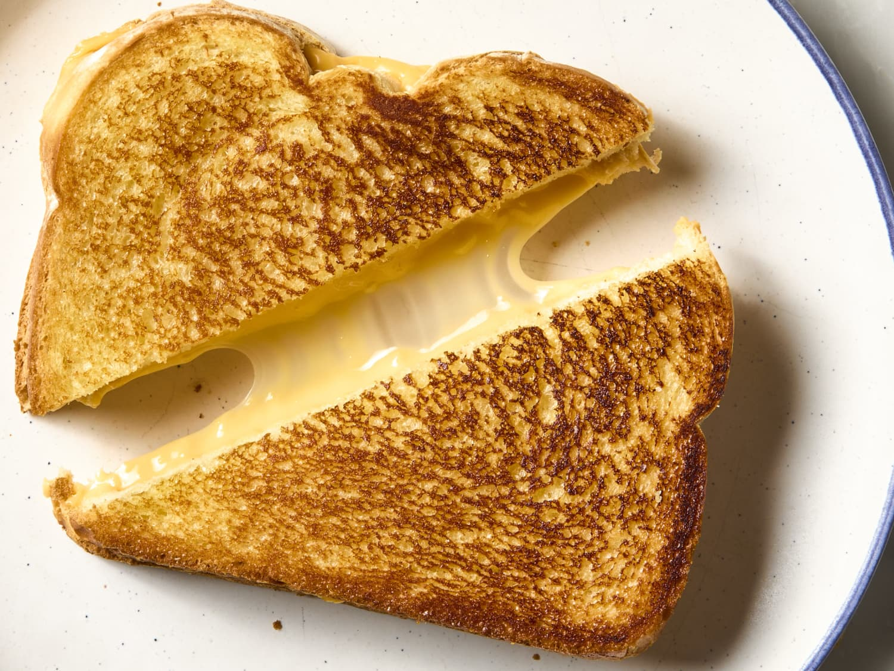

Grilled Cheese

Description
It’s incredibly simple, but it yields an undeniably crave-able sandwich.
This grilled cheese is crisp and golden on the outside and deliciously melty in the middle (see that cheese pull up there?!).
Ingredients
- Good Bread – My preferred type of bread for this recipe is sourdough, because I love the tang it adds to the sandwich.
- Mayonnaise – For the outside of the bread! It helps it cook up with a crisp, beautifully browned exterior.
- Dijon mustard – It’s not totally traditional, but it’s SO delicious, adding subtle tangy flavor.
- Butter – For the pan.
- Cheese - I love to use a combo of two different cheeses to give the sandwich a richer taste.
Steps
- Spread mayo on bread. Not butter! The mayo helps the bread brown insanely well in the skillet, creating a mouthwatering crunch when you bite into the sandwich.
- Add grated cheese. I find that grated cheese melts more evenly than a slice of cheese does.
- Choose the right skillet. We like to use cast-iron because it creates gorgeous browning on the outside of the sandwich.
- Go low and slow. I don’t raise my heat any higher than medium-low. If the pan gets too hot, the bread will burn before the cheese melts.
- Cover the pan. Add enough butter to coat the bottom of the pan. Then, add the sandwich, and COVER the skillet.
- Adjust the heat as needed. Lower it if the bread is browning too quickly!